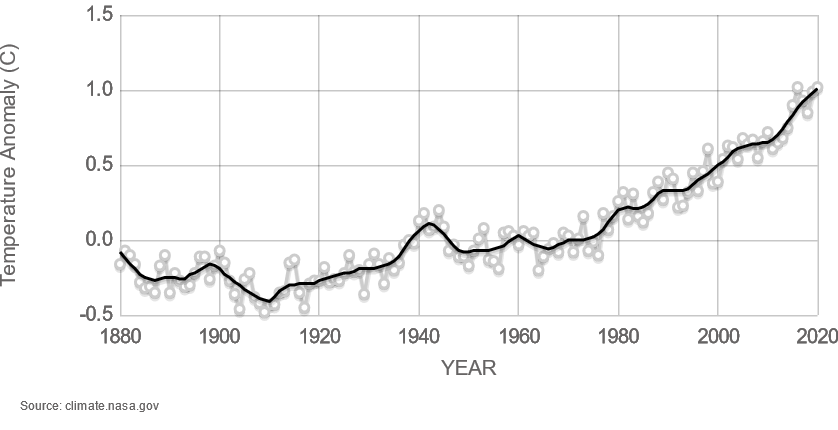

Boston is the oldest subway system in the United States. According to Gavin R. Fraser, Richard J. Leary, Massimo Marianeschi, and Carlo Pellegrini in their article from the 9th National Light Rail Transit Conference, "Integrating New Light Rail Vehicle: Technology into Mature Infrastructure"¹, Boston also “operates the oldest light rail system in North America, known as the Green Line, with sections dating back more than 100 years.” To compare, New York’s first subway station, City Hall, opened in 1904, according to the New York Transit Museum. By then, as seen above, electric streetcars and trolleys had already existed in the city. Thus, Boston was considered the “‘grandfather’ of the light rail industry”. Essentially, Boston became a sort of blueprint for future light rail services like the ones in Toronto and Philadelphia.
Thus, as one of the oldest continuous light rail systems in the United States, Boston must lead the way in innovations regarding this field, and Boston has faced quite a few challenges in its history. Of course, Boston is subject to several nor'easters, and often, service is disrupted. The Green Line, especially, suffers greatly. Below is a video of a train on the B line in the early morning after a snowstorm.
Despite the government touting the MBTA as a better way to get around in inclement weather like Tuesday’s according to the Boston Herald², the lines are often plagued with delays and reduced service after snowstorms. One would think that the city would be better prepared for something they face every year. However, one should not underestimate climate change. Shown below is NASA's Global Land-Ocean Temperature Index³, showing how hot the Earth has gotten over the decades.

The Challenges
Another problem the MBTA faces is safety. Like any metro system, Boston has faced its fair share of dangerous accidents that have wrecked the system. One particular accident occurred on May 28, 2008, when a westbound Green Line train struck another which was stopped in Waban, a station in Newton, a suburban town outside of Boston. According to a report from the National Transportation Safety Board⁴, "the operator of the striking train was killed; the other three crewmembers sustained minor injuries." It was revealed that the striking operator was on his phone when the crash occurred. Below is a picture of the wreckage of the striking car.
This was not the only accident to happen in Newton. Eleven years later (2019), a Green Line train derailed near the same location. Luckily, only one passenger was on board, and they were not injured.
In that same year, two accidents happened almost back to back. According to March Breakstone in the Massachusetts Injury Lawyer Blog⁵, in Kenmore, a Green Line train derailed near the tunnel near Kenmore Square, injuring 11. A couple of days after that, a Red Line train derailed near the UMass Boston campus, injuring two. According to the Boston Globe (and as reported by the Associated Press)⁶, the number of derailments in Boston is among the nation's highest, second only to New Orleans, with 43 derailments in 5 years (2014-2018). One third of such derailments involved maintenance vehicles.
One last challenge for the road is accessibility. The Americans with Disabilities Act of 1990, or ADA, prohibits discrimination based on disability, which can range from physical to mental. In addition, accessibility requirements are imposed on public accomodations. This means sidewalks now have ramps to allow wheelchair users to cross roads, workspaces have to reasonably accomodate those with disabilities, etc. In terms of transportation, especially subway transportation, easier access to transfers and elevators is now a must.
Going back to the 9th National Light Rail Transit Conference, the MBTA was the second subway system - and the first "mature" light rail system - to order low-floor cars (LFCs), which as the name suggests, have a majority of floor space at street level, allowing for wheelchair users to board and use the cars. Today, most of the Green Line is comprised of LFCs, with a new set of cars having been implemented starting in 2018 because of the Green Line Transformation, an extensive overhaul of the line. Still, there is much to be done when it comes to accessibility. How can one improve the stations such that wheelchair users and other persons with mobility issues can board trains with ease? How can one facilitate free transfers across stations?
TL;DR
¹Fraser, Gavin R., Richard J. Leary, Massimo Marianeschi, and Carlo Pellegrini. "Integrating New Light Rail Vehicle: Technology into Mature Infrastructure." Transportation Research Circular, November 2003, http://onlinepubs.trb.org/Onlinepubs/circulars/ec058/ec058.pdf#page=126.
²Cotter, Sean Philip. "MBTA sees delays again during snow storm." Boston Herald, December 17, 2019, https://www.bostonherald.com/2019/12/17/snow-snarls-mbta-lines-causing-delays-again/.
⁴National Transportation Safety Board. "Collision Between Two Massachusetts Bay Transportation Authority Green Line Trains." July 14, 2009. NTSB/RAR-09/02.
⁵Breakstone, Marc, et al. “MBTA Derailments Cause Boston Commuters Injuries, Stress and Delays”. Massachusetts Injury Lawyer Blog, 12 June, 2019, https://www.massachusettsinjurylawyerblog.com/mbta-train-derailments-cause-injuries-stress-and-delays-in-boston/.
⁶Report: Number of MBTA derailments among nation’s highest. Associated Press, June 12, 2019, https://apnews.com/article/e735b27815984e57aba877b861f37859.